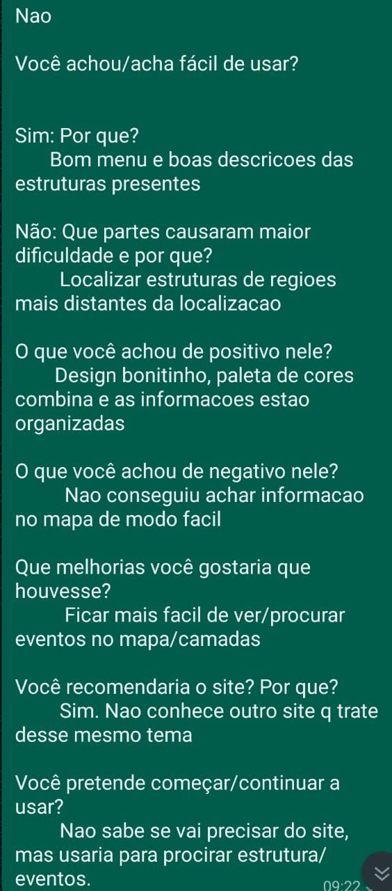

Cultura Educa Avaliação
Home
Extreme User Interview
Participante:
João
Descrição:
Familiaridade com computadores avançada, usuário de Arch Linux e é o responsável por configurar os computadores da família.
Data de nascimento:
26/11/2002
Gênero:
Homem cis
Você conhecia o site Cultura Educa?
Não
Você achou/acha fácil de usar?
Considerou que o menu e as descrições de cada equipamento são de boa qualidade.Considerou difícil localizar as estruturas de regiões mais distantes da localização.
O que você achou de positivo nele?
Considerou o site esteticamente agradável, principalmente pela paleta de cores escolhida. As informações acerca dos equipamentos também se encontram organizadas.
O que você achou de negativo nele?
As informações no mapa estão muito ocultas, incluindo as que estão no botão camadas.
Que melhorias você gostaria que houvesse?
Gostaria que ficasse mais fácil ver/procurar informações no mapa e em CAMADAS.
Você recomendaria o site? Por que?
SIm, porque não conhece outro site que faz filtro de equipamentos semelhante.
Você pretende começar/continuar a usar?
Talvez, a depender da necessidade de acompanhar a plataforma.
Fly on the Wall
Observação
O participante teve facilidade em realizar o cadastro na plataforma, que foi o que primeiramente chamou sua atenção, porém não percebeu que era necessário confirmar o email. Após esse procedimento, ele demonstrou irritação com o formulário que aparece a seguir, por ser muito longo. Além disso, demorou para perceber que o mapa e o botão “camadas” poderiam ser usados para procurar equipamentos mais distantes da sua localização. Também não conseguiu encontrar eventos cadastrados.
